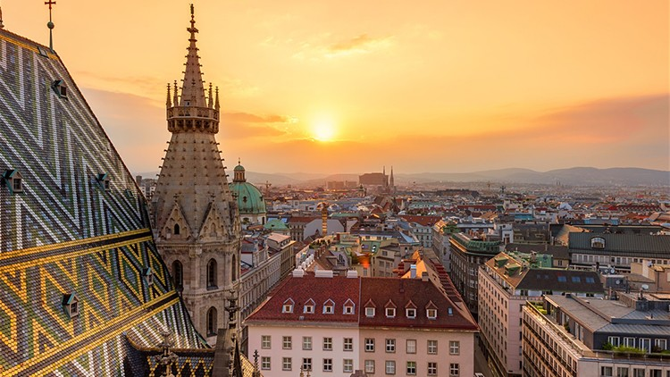

Burada Viyana'daki deneyimlerim hakkında kısa bir yazı olacak.
Viyana, Avusturya'nın başkenti olup, sanatı, müziği ve zarafetiyle ünlüdür. Şehirde, ünlü opera binası, Kunsthistorisches Museum ve Schönbrunn Sarayı gibi tarihi yapılar bulunmaktadır. Ayrıca, Viyana'nın kahve kültürü de oldukça ünlüdür. Viyana'da geçireceğiniz her an, sizi tarihin ve sanatın içine çeker.
 Ana Sayfa'ya Dön